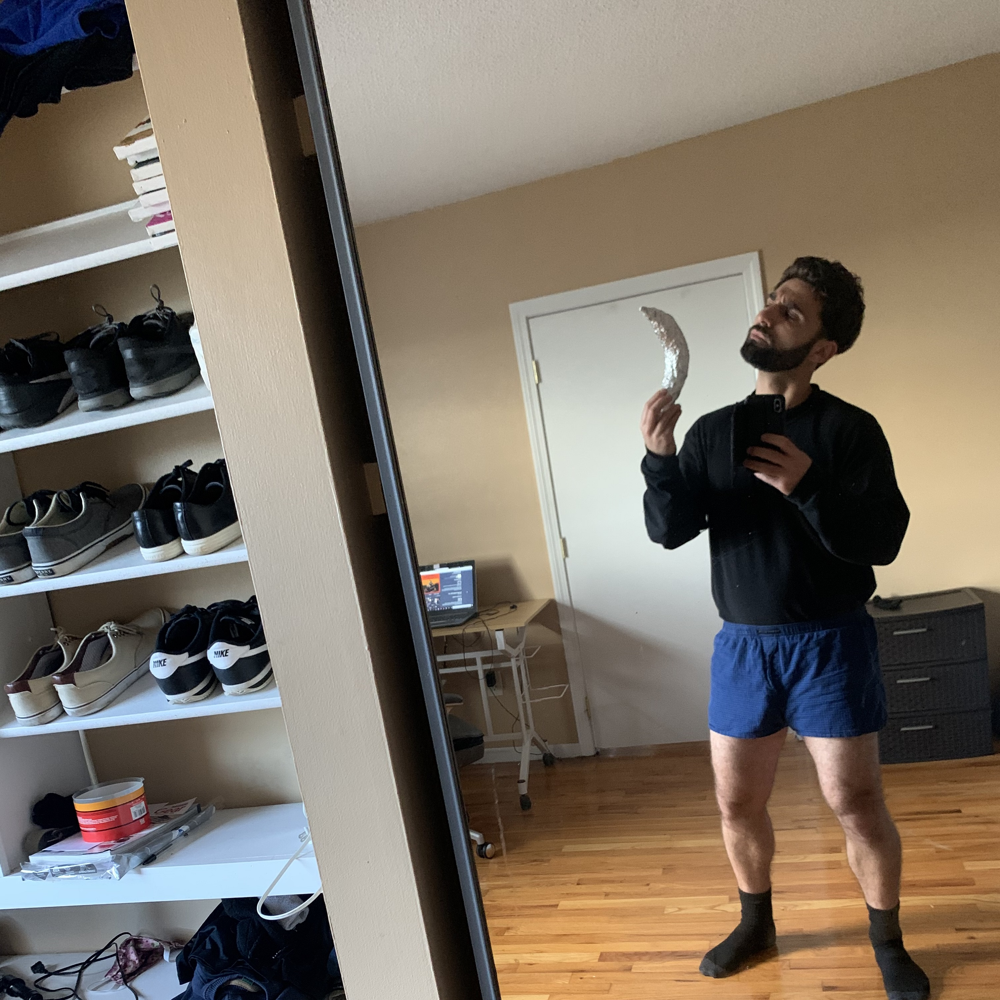
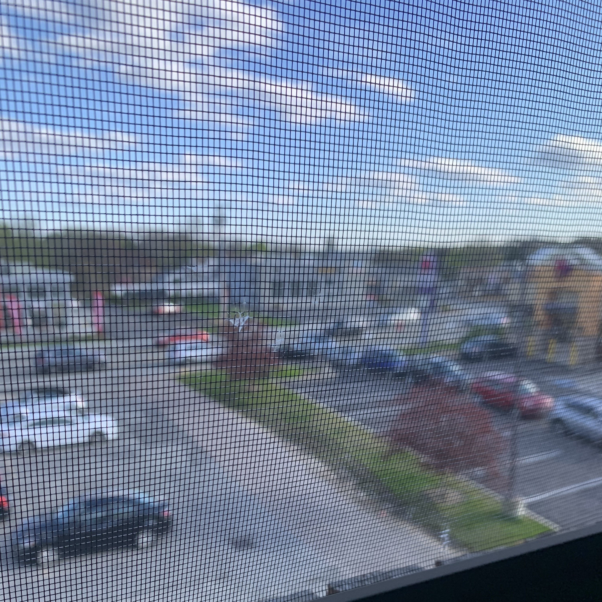
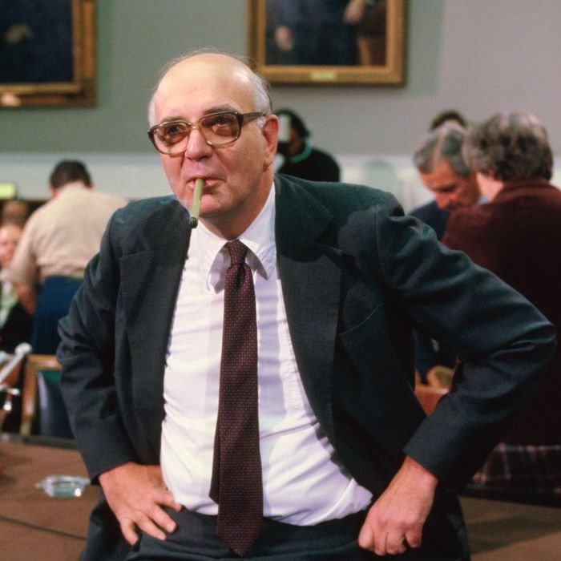

Welcome to the homepage of Nick Peri
hahahah


WHAT'S A COMPUTER follows former Federal Reserve Chairman PAUL VOLCKER as he sips an affordably priced beer in his rented Toulon, France cottage. With a handful of cereal boxes laid out on his kitchen table, he strenuously contemplates which brand he'd like a bowl of for dinner, muttering in drone-like intonations as he makes this crucial decision.
Available to stream and download on June 23 exclusively at NickPeri.com
Contact: Nick_Peri at AOL